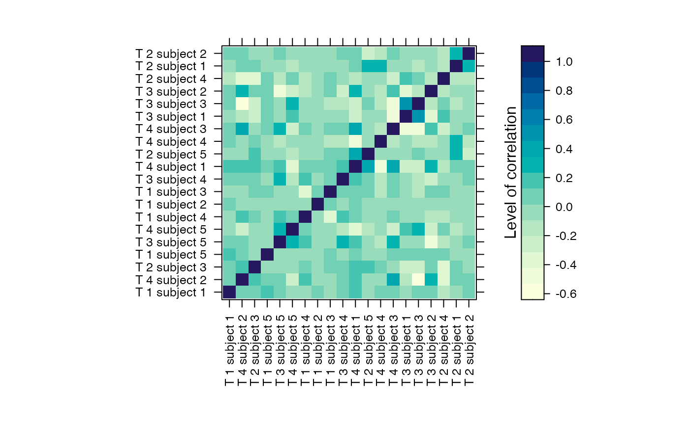

Methods for function summary
# S4 method for micro_array summary(object, nb.graph = NULL, ...)
Arguments
| object | an object of class micro-array |
|---|---|
| nb.graph | (optionnal) choose the graph to plot. Displays all graphs by default. |
| ... | additional parameters. |
Examples
#> log(S/US) : P1T1 log(S/US) : P1T2 log(S/US) : P1T3 #> Min. :-759.882 Min. :-2024.5979 Min. :-1007.748 #> 1st Qu.: -36.758 1st Qu.: -22.5653 1st Qu.: -68.054 #> Median : 6.265 Median : 0.5759 Median : -4.192 #> Mean : 10.613 Mean : -6.6230 Mean : 3.085 #> 3rd Qu.: 74.682 3rd Qu.: 78.2516 3rd Qu.: 74.866 #> Max. : 647.643 Max. : 870.7513 Max. : 1155.413 #> log(S/US) : P1T4 log(S/US) : P2T1 log(S/US) : P2T2 log(S/US) : P2T3 #> Min. :-1075.637 Min. :-790.431 Min. :-1505.543 Min. :-980.965 #> 1st Qu.: -31.538 1st Qu.: -65.394 1st Qu.: -59.833 1st Qu.: -55.077 #> Median : -2.293 Median : 2.087 Median : -1.262 Median : -7.144 #> Mean : 9.055 Mean : 7.791 Mean : -18.568 Mean : -35.647 #> 3rd Qu.: 75.316 3rd Qu.: 70.108 3rd Qu.: 76.908 3rd Qu.: 41.364 #> Max. : 556.449 Max. : 669.203 Max. : 1058.385 Max. :1114.897 #> log(S/US) : P2T4 log(S/US) : P3T1 log(S/US) : P3T2 log(S/US) : P3T3 #> Min. :-547.117 Min. :-1278.6158 Min. :-624.834 Min. :-1018.897 #> 1st Qu.: -58.721 1st Qu.: -42.1909 1st Qu.: -48.460 1st Qu.: -52.456 #> Median : -3.519 Median : 0.4064 Median : -2.505 Median : -2.026 #> Mean : -24.277 Mean : -3.8860 Mean : -11.950 Mean : 5.893 #> 3rd Qu.: 37.621 3rd Qu.: 48.4275 3rd Qu.: 33.781 3rd Qu.: 43.214 #> Max. : 270.423 Max. : 527.3972 Max. : 576.141 Max. : 1159.517 #> log(S/US) : P3T4 log(S/US) : P4T1 log(S/US) : P4T2 log(S/US) : P4T3 #> Min. :-2403.703 Min. :-683.000 Min. :-1957.3692 Min. :-591.460 #> 1st Qu.: -57.493 1st Qu.: -81.510 1st Qu.: -39.3372 1st Qu.: -39.499 #> Median : -4.529 Median : 5.102 Median : -0.0215 Median : 2.251 #> Mean : -33.088 Mean : -2.034 Mean : 2.9550 Mean : 27.377 #> 3rd Qu.: 51.808 3rd Qu.: 74.738 3rd Qu.: 77.1869 3rd Qu.: 62.097 #> Max. : 495.014 Max. : 454.955 Max. : 955.0680 Max. :1341.859 #> log(S/US) : P4T4 log(S/US) : P5T1 log(S/US) : P5T2 log(S/US) : P5T3 #> Min. :-577.069 Min. :-436.986 Min. :-647.1962 Min. :-409.347 #> 1st Qu.: -31.924 1st Qu.: -69.809 1st Qu.: -48.5156 1st Qu.: -44.205 #> Median : 2.456 Median : 2.156 Median : -0.2949 Median : -1.056 #> Mean : 29.675 Mean : -2.929 Mean : 6.2300 Mean : 6.190 #> 3rd Qu.: 35.322 3rd Qu.: 47.462 3rd Qu.: 47.9558 3rd Qu.: 47.694 #> Max. :1577.042 Max. : 651.596 Max. :1359.9584 Max. : 434.178 #> log(S/US) : P5T4 #> Min. :-188.652 #> 1st Qu.: -33.097 #> Median : 1.873 #> Mean : 26.740 #> 3rd Qu.: 67.879 #> Max. : 743.820